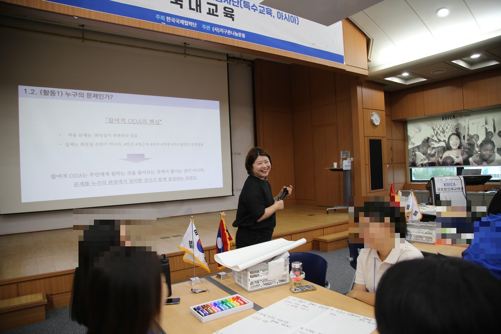
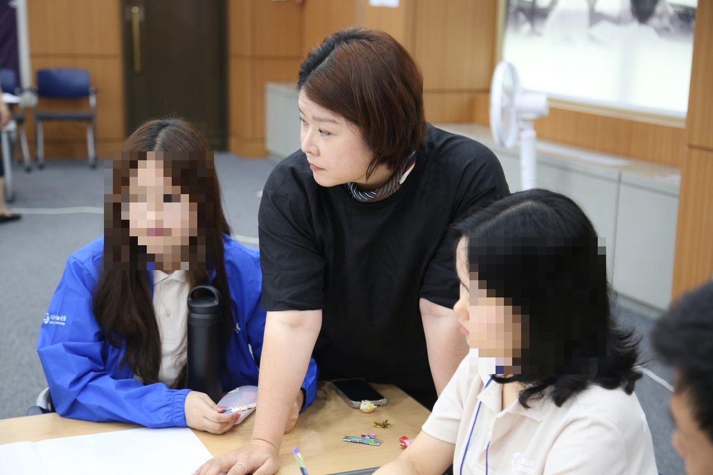

문제를 누구의 관점에서 정의할 것인가
KOICA 프로젝트봉사단(특수교육·아시아) 국내교육에서

- 일시2026년 7월 21–22일
- 대상KOICA 프로젝트봉사단(특수교육·아시아) 단원
- 주최·주관한국국제협력단(KOICA) 주최, (사)지구촌나눔운동 주관
- 장소KOICA 글로벌인재교육원(양재)
- 주제참여적 ODA와 PDM — 문제를 누구의 관점에서 정의할 것인가
화장실이 부족하다는 문제
이 교육에서 가장 오래 붙드는 활동은 「누구의 문제인가」입니다. 시작은 단순한 문장 하나입니다. "학교에 화장실이 부족하다." 대부분의 사업은 여기서 바로 해법으로 건너뜁니다. 화장실을 더 지으면 된다는 것입니다.
그런데 같은 상황을 학생, 교사, 학부모, 장애 학생, 관리 담당자의 자리에서 각각 적어 보면 문제의 이름이 달라집니다. 안전이 문제인 사람이 있고, 접근성이 문제인 사람이 있고, 관리와 위생이 문제인 사람이 있습니다. 결국 부족한 것은 화장실의 개수가 아니라, 무엇을 문제로 볼지 정하는 자리에 누가 앉아 있는가였습니다.

특수교육 단원들에게 특히 중요한 이유
이번 단원들은 특수교육 분야로 파견됩니다. 장애를 가진 학생이 있는 현장에서는 문제 정의의 주체가 누구인가 하는 물음이 훨씬 날카롭게 걸립니다. 당사자가 의사결정 자리에서 빠지기 쉽고, 그 자리를 교사나 가족, 혹은 외부에서 온 봉사단원이 대신 채우기 쉽기 때문입니다. 좋은 의도가 그대로 대리결정이 되는 구조입니다.
그래서 이 활동을 앞에 두었습니다. PDM의 칸을 채우는 기술보다, 그 칸에 들어갈 문장을 누가 정했는지를 먼저 의식하게 하려는 것입니다.
남은 물음
교육장에서는 이 관점이 잘 작동합니다. 문제는 현장입니다. 파견 기관의 일정과 예산은 이미 정해져 있고, 단원 한 사람이 문제 정의의 주체를 바꾸기는 어렵습니다. 그렇다면 이 교육이 단원에게 남기는 것은 실행 능력이 아니라 불편함일 수도 있습니다. 그 불편함을 기관이 받아 줄 통로가 있는지가 다음 물음입니다.